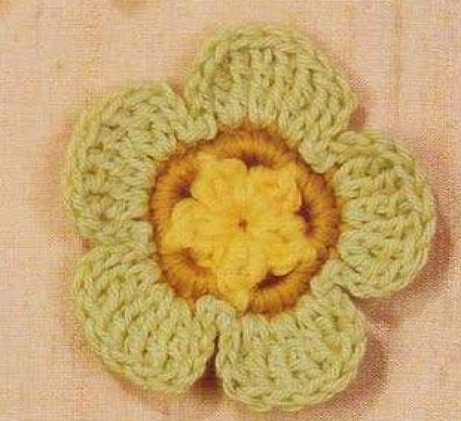
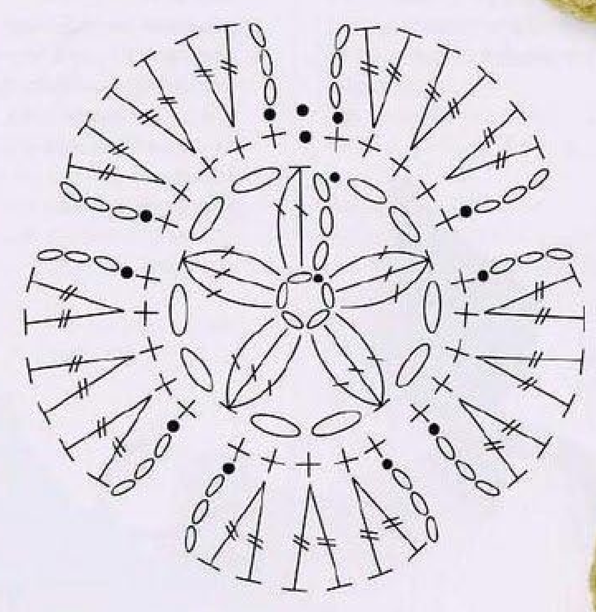
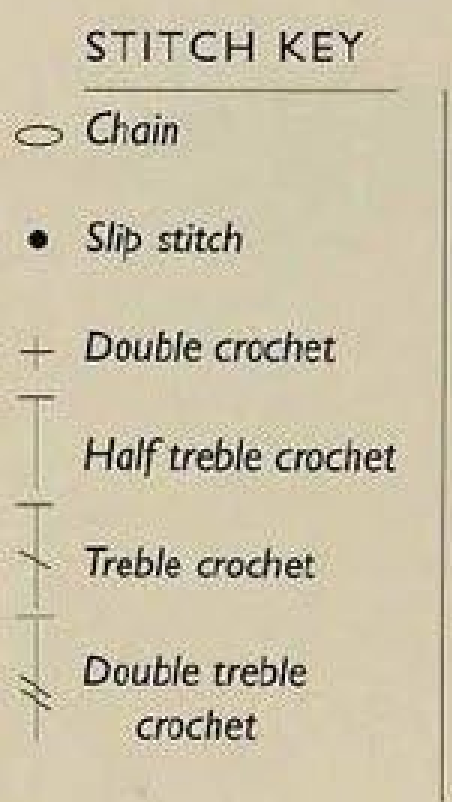
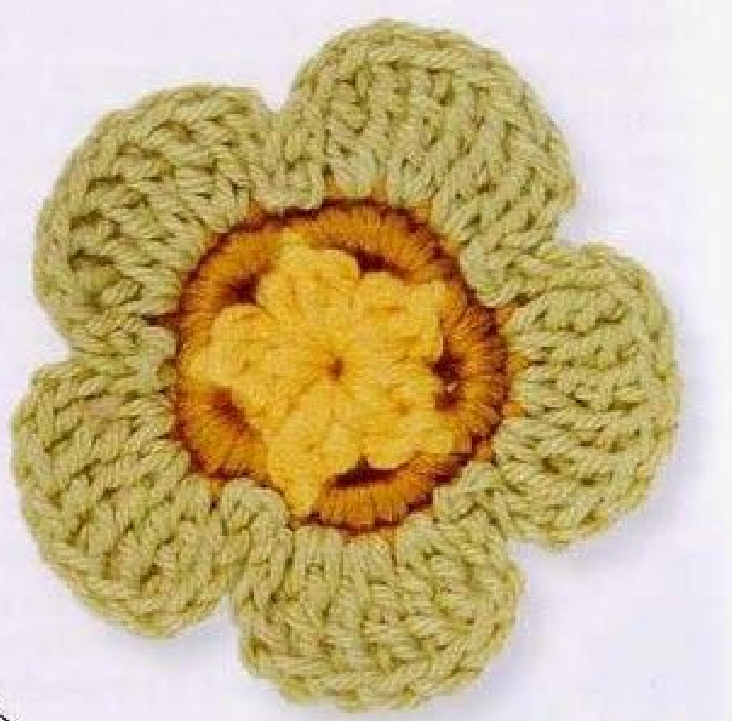

A crochet hellebore flower brings together a textured yellow center, a warm ochre ring, and five softly rounded green petals. This small cotton appliqué offers enough detail to stand on its own while remaining useful as an embellishment for a bag, a handmade card, or a wrapped gift. Its character comes from the contrast between compact center stitches and the taller stitches that spread outward into broad petals.

This crochet hellebore flower pattern uses three joined rounds. You begin with a chain ring, form five yellow clusters, surround them with an ochre round, and finish with pale-green petals. The instructions below use US crochet terminology throughout. Read the special-stitch explanations before starting, particularly the opening cluster and the treble crochet used for the petals.
Key Takeaways
- The flower is a single crochet motif with five outer petals.
- Three joined rounds create the yellow center, ochre ring, and pale-green edge.
- The documented yarn choice is 4-ply cotton in three colors.
- The first round contains five clusters and five chain spaces; the second contains 25 single crochet stitches.
- Each petal uses six treble crochet stitches, framed by chains and slip-stitch anchors.
- You can change the finished scale by changing yarn and hook together while keeping the stitch sequence intact.
The Shape and Texture of a Crochet Hellebore Flower
This flower has three distinct visual areas. The yellow center forms a small raised star of clustered stitches. An ochre ring sits around that center and gives the color arrangement a clear boundary. Five pale-green petals finish the outside, each forming a rounded scallop with visible tall stitch posts.
The petals are part of the final crochet round. They are not separate pieces that need to be sewn together. That makes this a useful project when you want a decorative flower without managing several loose components. Once the crochet is complete, the remaining work is fastening off, securing the color-change tails, and shaping the motif.
Use the flower as a flat appliqué where its outline can remain visible. A plain fabric bag, a simple gift tag, or a solid-colored card gives the green petals room to stand out. If you attach several flowers to one project, leave enough space between them to keep the five-petal shapes readable.
The original palette is especially effective because it separates the construction clearly. For your first flower, keeping the three colors distinct makes counting easier. After you understand the stitch sequence, you can experiment with cream, dusty pink, or lavender petals while retaining the same center and petal arrangement.
How the Three-Round Flower Is Constructed
The starting chain ring provides the foundation for all five center clusters. Work the first-round stitches into the opening of that ring rather than into individual foundation chains. Between each cluster, a chain-2 space leaves an opening for the following round.
The second round places five single crochet stitches into each of those five spaces. This creates 25 stitches distributed evenly around the flower. The second round is both a colored border around the center and the foundation for the petals. Count it before moving on, because the outer round depends on five groups of five stitches.
For each petal, the final round uses a slip-stitch anchor, a chain rise, three increases made with treble crochet, another chain section, and a second slip-stitch anchor. Working two treble crochet stitches into each of three consecutive foundation stitches creates six tall stitches per petal. Those increases give the petal its width.
The project is listed as a basic design, but beginners should be comfortable recognizing stitch tops and chain spaces. Cluster stitches also require you to leave several stitches unfinished before closing them together. If either clusters or treble crochet is unfamiliar, practice those movements with spare yarn before starting the flower.
Construction Note
The most useful checkpoint is the ochre round. Its 25 single crochet stitches divide into five groups of five, with one group supporting each green petal. Correcting a missing stitch here is much easier than correcting the flower after the petals are finished.
Crochet Hellebore Flower Pattern
Project: A five-petal cotton flower with a clustered yellow center and an ochre ring. The three-round stitch sequence and original color arrangement are retained here, with expanded explanations in US terminology. Hook size, yarn quantity, and finished measurements below are practical starting estimates, rather than specifications supplied with the pattern.
| Skill level | Basic design; suitable for a confident beginner familiar with clusters and tall stitches. |
|---|---|
| Base size | One flower. Approximate working target: 2–2½ inches, or 5–6.5 centimeters, across after shaping. Actual size depends on yarn and tension. |
| Yarn | 4-ply cotton in yellow, ochre, and pale green. Choose three yarns of comparable thickness. |
| Estimated quantity | Allow approximately 10–15 yards, or 9–14 meters, total as a starting allowance. Pale green will use the largest share. |
| Suggested hook | 2.75 mm, commonly US C/2. Adjust to suit your cotton and achieve clear, stable stitches. |
| Gauge | No fixed gauge is supplied. Make one motif and measure it if the attachment space requires a particular size. |
| Notions | Scissors, a tapestry needle, and an optional removable stitch marker. |
| Terminology | US crochet terms throughout. |
Colors and Abbreviations
- A: Yellow, used for the center.
- B: Ochre, used for the middle ring.
- C: Pale green, used for the petals.
- ch: Chain.
- sl st: Slip stitch.
- sc: Single crochet.
- dc: Double crochet.
- tr: Treble crochet.
- st / sts: Stitch / stitches.
- sp: Space.
- RS: Right side, the front of the flower.
- yo: Yarn over.
For comparison, UK double crochet corresponds to US single crochet, UK treble crochet corresponds to US double crochet, and UK double treble crochet corresponds to US treble crochet. Use the US abbreviations in the instructions below without substituting the UK stitches of the same name.
Special Stitches
Partial double crochet: Yarn over, insert the hook into the indicated ring or space, yarn over and draw up a loop, then yarn over and pull through two loops. Stop before the final pull-through. This leaves an unfinished double crochet on the hook.
Opening cluster: Chain 3, then make two partial double crochet stitches into the starting ring. You will have three loops on the hook. Yarn over and pull through all three loops. The beginning chain-3 supplies the first tall leg, so this opening group acts as one three-leg cluster.
Three-double-crochet cluster: Make three partial double crochet stitches into the same ring, leaving the final loop of each unfinished. You will have four loops on the hook. Yarn over and pull through all four loops to close the cluster.
Treble crochet: Yarn over twice, insert the hook into the indicated stitch, yarn over and draw up a loop. Yarn over and pull through two loops three times. One loop remains on the hook.
Follow the Hellebore Stitch Chart
Read this circular chart from its central chain ring outward. The first round creates five clusters, the second supplies the 25-stitch petal foundation, and the final round shapes five petals. Follow the written instructions below for the joins and color changes.


Terminology reminder: In the source legend, UK double crochet means US single crochet, UK half treble means US half double crochet, UK treble means US double crochet, and UK double treble means US treble crochet. Chain and slip stitch have the same names. The legend includes some stitches not needed for this flower.
Before You Begin
Work with the right side facing throughout. Do not turn between rounds. These are joined rounds, so do not treat them as a continuous spiral. The starting chain-5 forms the foundation ring; it is not included in the later stitch counts.
The chain-2 sections in Round 1 are spaces. The chain-3 sections in Round 3 shape the sides of the petals and are counted separately from the treble crochet stitches. Slip stitches anchor and join the work; they are not counted as single crochet or treble crochet stitches.
Leave enough yarn at each color change to weave the ends securely through the back. Avoid crocheting tightly over a bulky bundle of tails, which can distort a small motif. You can weave them in after the final round instead.
Foundation Ring
With yellow A, chain 5. Insert the hook into the first chain and make a slip stitch to form a ring. Check that the chain is not twisted. All center stitches will be worked into the ring opening.
Round 1: Yellow Cluster Center
- Chain 3 and make the opening cluster by working two partial double crochet stitches into the ring, then closing them together.
- Chain 2.
- Work one three-double-crochet cluster into the ring, then chain 2. Repeat this complete sequence four times.
- Change to ochre B as you slip stitch into the top, or third chain, of the opening chain-3.
Checkpoint: Five clusters and five chain-2 spaces. The opening cluster counts as the first cluster; the four full clusters complete the center.
To change color on the joining slip stitch, insert the hook into the joining point, draw ochre through that point and through the loop already on the hook. Leave a yellow tail for weaving in and continue with ochre.
Round 2: Ochre Ring
- Work 5 single crochet stitches into the first chain-2 space.
- Work 5 single crochet stitches into each of the remaining four chain-2 spaces.
- Change to pale green C as you slip stitch into the first single crochet of the round.
Checkpoint: 25 single crochet stitches. Each chain space contains five stitches, and no stitches are added into the cluster tops.
The first single crochet is worked directly into the space. This sequence does not add a counted starting chain. Keep the joining slip stitch separate from the 25 foundation stitches used for the petals.
Important: Count all 25 single crochet stitches before starting the green round. An extra stitch worked into the joining slip stitch, or a missing stitch in one space, changes the petal foundation.
Round 3: Five Pale-Green Petals
With pale green C, work the following petal sequence five times, moving around the 25 single crochet stitches:
- Slip stitch into the next single crochet.
- Chain 3.
- Work 2 treble crochet stitches into each of the next 3 single crochet stitches. This makes 6 treble crochet stitches.
- Chain 3.
- Slip stitch into the next single crochet to anchor the other side of the petal.
After completing all five petals, slip stitch into the first slip-stitch anchor of this round. Each petal sequence uses five foundation stitches: one for the first anchor, three for the treble crochet increases, and one for the closing anchor. Five repeats use all 25 foundation stitches.
Final checkpoint: Five petals, with six treble crochet stitches per petal. Across the round there are 30 treble crochet stitches, ten chain-3 sections, and ten petal-anchor slip stitches, plus the final joining slip stitch.
Fastening Off and Completing the Motif
Cut pale green, leaving a tail long enough to weave securely. Draw the tail through the final loop without tightening it into a hard knot. Thread the tail onto a tapestry needle and guide it to the back near the final joining point. Weave it through several stitch backs, reverse direction, and weave through another short section before trimming.
Secure the yellow and ochre tails in matching-color stitches where possible. Inspect the front to make sure none of the ends shows across the center or petals. No separate flower components, border, or seams are required to complete the motif.
Customizing the Color and Finished Size
Keep the same stitch counts when you want the same five-petal structure. To make a smaller flower, try finer cotton with a suitably smaller hook. For a larger flower, use thicker cotton and a hook that gives the yarn enough room to form clear stitches. Make one sample before producing several matching motifs.
A different hook alone can also change the result, but it affects firmness as well as size. A larger hook may create a looser, more open flower. A smaller hook may make the cluster center hard to close and the petal anchors difficult to enter. Choose a combination that lets the flower hold its outline without feeling rigid.
For color variations, preserve a visible difference between the center and the middle ring. Cream petals with a yellow center create a lighter version; lavender petals with a muted ochre ring offer a stronger contrast. Use yarns with similar thickness and care requirements so the rounds behave consistently.
If a flower must fit a particular patch on a bag or card, measure the space first. Compare it with a completed, gently shaped sample. Do not add random stitches to the petal round to reach a target diameter, because that changes how the five repeats fit the foundation.
Troubleshooting the Center and Petals
The Yellow Center Has the Wrong Number of Clusters
Count the opening cluster as one complete group. It contains the beginning chain-3 and two unfinished double crochet stitches closed together. After that, make four full three-double-crochet clusters. If you work five full clusters after the opening group, the center will have six clusters instead of five.
The Ochre Round Has More or Fewer Than 25 Stitches
Check each chain-2 space separately. Every space needs five single crochet stitches. Also inspect the join: a slip stitch can look like an extra stitch top, but it does not belong to the 25-stitch petal foundation. Remove and correct the affected section before adding the petals.
A Petal Looks Narrow or Uneven
Each petal needs two treble crochet stitches in each of three consecutive foundation stitches. That gives six tall stitches. Working only one treble in a foundation stitch narrows the petal. Check the chain-3 sections as well; very tight chains can pull the sides inward.
Small differences in handmade petals are normal, but substantial differences usually come from a missed increase, uneven stitch height, or a misplaced anchor. Compare the affected petal with the sequence before using blocking to correct its shape.
Stitch Tip: In this US version, the petals use treble crochet, beginning with two yarn overs. Substituting US double crochet makes shorter stitches and changes the outline.
Shaping, Attaching, and Caring for the Flower

Lay the completed flower on a towel and arrange the five petals with your fingertips. If the cotton needs gentle blocking, dampen the motif according to the yarn label, then ease each petal into a rounded shape. Let it dry naturally. Avoid stretching the tall stitches until they lose their compact, scalloped appearance.
To attach the flower to fabric, position it first and check the spacing. With matching thread or yarn, make small stitches through the backs of the motif and into the fabric. Secure the center and add a discreet attachment point near each petal base so the flower remains stable without flattening its outer edge.
For a card or gift tag, sew through small prepared holes if the backing supports stitching. Alternatively, choose an adhesive suited to both cotton and the backing material, testing it on spare materials first. Keep adhesive away from the visible petal edges.
Care Tip: Follow the cotton yarn label and the care requirements of the item receiving the appliqué. A washable flower does not make its card, lining, or attachment adhesive washable.
At a Glance
- Yarn: Three comparable 4-ply cotton colors.
- Skill: Basic construction with clusters and treble crochet.
- Key counts: Five center clusters, 25 foundation stitches, and five petals.
- Size adjustment: Change yarn and hook together while preserving the sequence.
- Finishing: Secure every tail, shape gently, and attach through discreet stitch backs.
Make Your Crochet Hellebore Flower
Choose three cotton colors, read the complete crochet hellebore flower pattern, and practice the cluster closure if needed. Check the center before starting the ochre ring, then count all 25 stitches before forming the petals. These two checkpoints keep the construction straightforward.
Once your first flower is finished, measure it, shape the petals, and decide where its colors will work best. A carefully attached motif can give a plain bag, a handmade card, or a simple gift package a distinctive floral detail. Personalize the palette while keeping the five-petal construction consistent.